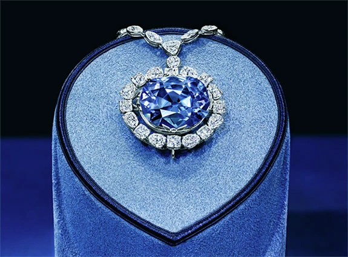

About Jewelry
Jewelry
jewelry, objects of personal a dornment prized for the craftsmanship going into their creation and generally for the va lue of their components as well. Claddagh ring Claddagh ring Throughout the centuries and from culture to culture, the materials considered rare and beautiful hav e ranged from shells, bones, pebbles, tusks, claws, a nd wood to so-called precious metals, precious and sem iprecious stones, pearls, corals, enamels, vitreous pastes , and ceramics. In certain eras artist-craftsmen have so metimes placed less emphasis on the intrinsic value of ma terials than on their aesthetic function as components contributin g to the effect of the whole. Thus, they might fashion a brooch out of steel or plastic rather than gold or platinum. Furthermore, in add ition to its decorative function, during much of its history jewelry has also been worn as a sign of social rank—forbidden by sumptuary laws to all but the ruling classes—and as a talisman to avert evil and bring good luck. During the Middle Ages, for example, a ruby r ing was thought to bring its owner lands and titles, to bestow virt ue, to protect against seduction, and to prevent effervescence in wa ter—but only if worn on the left hand. The famed Claddagh ring, a tra ditional Irish ring featuring a heart, a crown, and two hands, has lon g symbolized love, loyalty, and friendship, respectively. According to Irish custom, the ring s positioning on the hand conveys the wearers marital status. It is also called the “friendship ring” or “hands and heart ri ng.”
Materials and methods
The first materials used to make objects for personal adornment were taken from the animal and vegetable world. The material taken from the animal world, in a natural or processed form, constituted the actual adornment, whereas vegetable fibres served as its support. A great variety of shells and pieces of shell were used during the prehistoric age and are still used in certain island and coastal cultures to make necklaces, bracelets, pendants, and headdresses. In the inland regions the first materials used for personal adornment came from mammoths tusks, the horns of reindeer and other animals, and, later on, amber and lignite. All materials that have been used over the centuries for the manufacture of jewelry have undergone to some extent mechanical, physical, or chemical treatment for the purpose of transforming their raw shapes into shapes that, in addition to being functional, also satisfy certain aesthetic concepts.
Precious metals and their properties
Of gold’s properties, when it was first discovered (probably in Mesopotamia before 3000 bce), it was the metal’s malleability that was a new phenomenon: only beeswax, when heated to a certain temperature, could be compared to it. Gold’s molecules move and change position in accordance with the stresses to which it is submitted, so that when it is beaten it gains in surface area what it loses in thickness. In modern jewelry, gold can take on a variety of hues when it is alloyed with other metals: water green, white, gray, red, and blue.After gold, silver is the metal most widely used in jewelry and the most malleable. Although known during the Copper Age, silver made only rare appearances in jewelry before the Classical age. In general, silver was, and still is, used in jewelry for economic reasons or to obtain chromatic effects. It was often used in the 17th, 18th, and 19th centuries, however, as support in settings for diamonds and other transparent precious stones, in order to encourage the reflection of light.Another rare metal, whose use in jewelry is fairly recent, is platinum. From the 19th century onward this metal was used ever more frequently in jewelry because of its white brilliance and malleability, as well as its resistance to acids and its high melting point. Modern jewelry, such as that designed by early 20th-century artists, introduced nonprecious metals such as steel.
Metalwork
The basic components of jewelry have always consisted of sheet metal, metal cast in a mold, and wire (more or less heavy or fine). These components take on the desired shape by means of techniques carried out with the help of tools. Gold in its natural state was beaten while hot or cold and reduced to extremely thin sheets (this operation could be performed with stone hammers). The sheets were then cut into the desired sizes. Examination of the most ancient pieces of jewelry shows that one of the techniques used most widely in decorating metal sheets for jewelry was embossing (relief work). Throughout the centuries embossing techniques have remained substantially unchanged, although in modern times mechanization has made possible mass production of decorative parts of jewelry, with great savings of time and labour but with a corresponding lack of art. In repoussé the relief is pressed (in a negative mold) or hammered out from the reverse side of the gold sheet and then finished off on the right side with a hammer or engraving tool. For half-modeled or completely round reliefs, the gold leaf was pressed onto wooden or bronze models. Completely round objects were made in two pieces and then welded together. Another embossing, or relief, technique is engraving, which involves impressing designs into the metal with a sharp tool. Decorative openwork designs can be created by piercing the gold leaf. In the Roman period this technique was called opus interassile. Granulation is a decorative technique in which small or minute gold balls (with diameters ranging from 1/60 to 1/180 of an inch) are used to form silhouettes on smooth or embossed metal. Casting from precious metals has always been rare. When the relief was to be visible only from one side, the metal was poured into the cast and, when hardened, touched up with a graver. When the relief was to be fully modeled, the cire perdue (lost-wax) process, involving casting from a wax mold, was used. Gold and silver wire, according to its function, can be made into various sizes, shapes, sections, and weights. It can serve to join, to support pendants of varying importance, to make necklaces and bracelets, or to alternate with other decorative components. From the 3rd millennium bce through the present day, chains—ranging from the simple type, consisting of a series of round or oval rings, to one of the oldest elaborations, the “loop in loop,” or square, chain—have offered goldsmiths the widest field for decorative imagination. Filigree is a form of decoration made exclusively from fine gold or silver wire welded onto the surface of an object made of the same metal or done in openwork (without a background). The decoration to be carried out is designed first on a model with a flat or curved surface identical to that on which the completed filigree is to be welded or to the unsupported shape that it must assume. It can be made from smooth wire or from a ropelike plait or from a series of small hemispheres. A more complicated type of filigree consists of metal wire made in the shape of beads called granulated filigree. After having been prepared separately, the different parts that make up a piece of jewelry are put together. In early jewelry this was done mechanically, by inserting beaten pins, by bending and beating the parts to be fastened together, or by binding them with gold wire or tape. Welding is a technique belonging to a more developed stage of ancient gold working (end of the 3rd millennium bce).
Gems
In addition to gold, silver, and platinum, the precious materials most widely used in jewelry are gems—any precious or semiprecious stone. By definition this group also includes some animal and vegetable products with precious characteristics, such as amber, pearls, and coral. Conventionally, the following are classified as precious stones: diamonds, rubies (corundum), emeralds (beryl), and sapphires (corundum). To these, however, can be added chrysoberyl, topaz, and zircon because of their hardness and their refraction and transparency index.
The properties of gems
Diamonds have the highest refraction index, and those used for jewels are very transparent. Diamonds from Indian deposits were known in ancient times; in the West the limited use of diamonds began in the late Middle Ages. Diamonds for jewelry are graded on the basis of colour from blue-white to yellow. Grading also is done on the basis of purity, which varies from perfectly clear, extremely pure stones to those with many impurities and flaws. Large demand provided an incentive for the production of false diamonds (as well as other stones) as early as 1675 in Paris. Mogok rubies, from Myanmar (Burma), are the most highly prized because of their bright red colour (called pigeon blood). Those from Thailand are usually a more brownish colour, while those from Sri Lanka tend toward violet. Production of synthetic stones is far greater than the supply of natural rubies. The physical and optical properties of synthetic and natural rubies are so similar that it is difficult to distinguish between them. The sapphire (blue variety of corundum) is considered one of the most valuable of precious stones. A sapphire’s colouring usually indicates its origin. Those from Myanmar are deep blue. The Kashmir sapphire is cornflower blue and is highly prized, being quite rare. Sapphires from Thailand are very similar in colour to those from Myanmar; those from Sri Lanka are of different shades but incline toward violet. Sapphires, like rubies, can be cut so that, in the light, a beautiful, luminous six-pointed star appears on the surface of the gem. Star sapphires and rubies are semi-opalescent. Synthetic sapphires and rubies are produced by the same industries. The green emerald is a precious stone used since very ancient times. There is documentation of its presence in Egypt during the life of Pharaoh Sesostris III in the 19th century bce. At the end of the 16th century, emeralds from South America were brought into Europe. On the American continent, the first peoples to use emeralds were those belonging to the pre-Columbian civilizations, in particular the Inca. In 1935 in the United States (Chatham) and in Germany (Farbenindustrie), synthetic emerald crystals were made with characteristics similar to natural ones. Among the beryls, mention must be made of morganite (pink beryl) found in various shades of peach-blossom pink. The main deposits are in California and Madagascar. The two best known and most widely used varieties of chrysoberyl are alexandrite (transparent) and precious cat’s-eye (opaque). Because of its great power of absorption of certain colours, alexandrite looks green in daylight and reddish purple in artificial light. The cat’s-eye is a yellowish green colour and is characterized by a luminous line. The intensity of the light in this line varies according to the brightness of the rays of light that strike it.
Gem engraving, setting, and cutting
The most ancient technique of stone engraving, intaglio-incised carving, was probably first used to produce seals. The art is believed to have originated in southern Mesopotamia and was highly developed by the 4th millennium bce. During the Hellenistic Age (c. 323–30 bce) intaglio surface engraving gave rise to the idea of carving stones in relief, exploiting the different coloured layers of certain minerals to create contrasting figures (cameo): the background was cut down to the lower level, of a different colour or shade, in order to make the subject stand out chromatically. The stones that have properties suited for this purpose are sardonyx, agate, and onyx. The cameo is usually one of the components for necklaces, bracelets, and rings or is included in medallions with a jeweled frame. The art of cameo in jewelry was most highly developed during three periods: the late republican to early imperial period in Rome, the Renaissance, and the Neoclassical period in the 18th century. The evolution of techniques of setting has followed that of stonecutting. The insertion of gems in jewelry can be done in various ways. The setting can have a round, square, oval, or rectangular collet (rim); in periods in which gems were mounted in their own irregular shapes, the collet followed this form. Usually, on the inside of the collet a short distance from the edge, there is a protrusion on which the stone rests. The edge is pounded down around the gem to ensure its stability. In coronet settings the form may be conical or pyramidal, solid or pierced. The edge is first shaped into a row of teeth, which are later hammered down onto the gem in order to hold it in place. Until fairly recently, nearly all gems were mounted on a metal base, and transparent stones, according to their colour, were placed on a gold or silver base to increase the amount of light reflected. As new cuts were developed for stones, setting techniques also progressed, especially for those jewels in which important stones like diamonds, emeralds, and rubies form the main theme. The tendency was to leave the stones as visible as possible (especially in rivière necklaces and bracelets made only of diamonds) by mounting them with a very small ring of white gold or platinum fitted closely against the back of the stone. Three claws, attached to this ring, hold the stone in place. Pearls, like some coloured stones, in ancient Classical times were pierced with a drill, the hole going half or all the way through according to whether the pearls were to be strung on a necklace or fastened onto a jewel. Until the 15th century, stones were only polished or the part to be left visible was rounded into a dome shape called cabochon. The cutting known as faceting gradually developed from the first attempts in the 15th century, probably in France and the Netherlands. During the 16th century the simple rose cut began to be used, after which there were no new developments until 1640, when, under the patronage of Jules Cardinal Mazarin, the first brilliant cut was carried out (also called the Mazarin cut). Toward the end of that century, a Venetian succeeded in obtaining the triple brilliant cut, which is still used. The numerous cuts used for diamonds today are usually applied to other precious and semiprecious transparent stones as well. For emeralds, rubies, and other coloured stones the square or rectangular cut with a stepped bulb or the cabochon cut are usually used.
Diamonds
Diamonds were first mined in India. Pliny may have mentioned them, although there is some debate as to the exact nature of the stone he referred to as Adamas. In 2005, Australia, Botswana, Russia and Canada ranked among the primary sources of gemstone diamond production. There are negative consequences of the diamond trade in certain areas. Diamonds mined during the recent civil wars in Angola, Ivory Coast, Sierra Leone, and other nations have been labelled as blood diamonds when they are mined in a war zone and sold to finance an insurgency.[citation needed] The British crown jewels contain the Cullinan Diamond, part of the largest gem-quality rough diamond ever found (1905), at 3,106.75 carats (621.35 g). Now popular in engagement rings, this usage dates back to the marriage of Maximilian I to Mary of Burgundy in 1477. A popular style is the diamond solitaire, which features a single large diamond mounted prominently. Within solitaire, there are three categories in which a ring can be classified: prong, bezel and tension setting.
The history of jewelry design
The possibility of tracing jewelry’s historic itinerary derives primarily from the custom, beginning with the most remote civilizations, of burying the dead with their richest garments and ornaments. Plastic and pictorial iconography—painting, sculpture, mosaic—also offer abundant testimony to the jewelry worn in various eras. It is probable that prehistoric humans thought of decorating the body before they thought of making use of anything that could suggest clothing. Before precious metals were discovered, people who lived along the seashore decorated themselves with a great variety of shells, fishbones, fish teeth, and coloured pebbles. People who lived inland used as ornaments materials from the animals they had killed for food: reindeer antlers, mammoth tusks, and all kinds of animal bones. After they had been transformed from their natural state into various elaborate forms, these materials, together with animal skins and bird feathers, provided sufficient decoration. This era was followed by one that saw a transition from a nomadic life to a settled social order and the subsequent birth of the most ancient civilizations. Most peoples settled along the banks of large rivers, which facilitated the development of agriculture and animal husbandry. Indirectly, this also led to the discovery of virginal alluvial deposits of minerals, first among which were gold and precious stones. Over the years the limited jewelry forms of prehistoric times multiplied until they included ornaments for every part of the body. For the head there were crowns, diadems, tiaras, hairpins, combs, earrings, nose rings, lip rings, and earplugs. For the neck and torso there were necklaces, fibulae (the ancient safety pin), brooches, pectorals (breastplates), stomachers, belts, and watch fobs. For the arms and hands armlets, bracelets, and rings were fashioned. For the thighs, legs, and feet craftsmen designed thigh bracelets, ankle bracelets, toe rings, and shoe buckles.
Most Expensive Jewel

The Hope Diamond
One of the most widely recognized jewels in the world, the Hope Diamond is a 45.42-carat fancy dark grayish-blue, antique cushion cut diamond worth approximately $200-250 million. Since its initial discovery in Golconda, India in 1666, the diamond has changed hands numerous times.